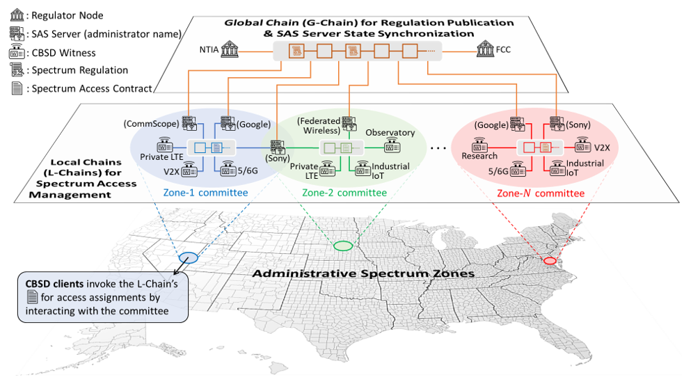

Blockchain for Wireless & 5G/nextG Mobile Networks

Enabling Dynamic Spectrum Sharing in Low-trust Environment
This research is a part of an interdisciplinary effort to address real challenges in 5G/nextG communications, in collaboration with InterDigital, our industry partner. It targets the fundamental security of Spectrum Access System (SAS), a widely recognized framework for dynamic spectrum sharing in the 5G era. The current SAS designated by the FCC follows a centralized service model which, however, faces various security challenges as were identified in our survey. Particularly, the fact that a user relies on an individual SAS server for spectrum access leads to serious concerns on system reliability and risks of single-point failure. In response, we proposed a blockchain-based decentralized SAS architecture dubbed BD-SAS to provide trustworthy SAS services securely and efficiently, without assuming trust on individual SAS servers. In BD-SAS, a global blockchain (G-Chain) is used for spectrum regulatory compliance while smart contract-enabled local blockchains (L-Chains) are instantiated in individual spectrum zones for automating spectrum access assignment per user request. BD-SAS stands as a new direction towards reliable, policy-compliant spectrum management in a low-trust environment.
Proposed Work
◾ Harmonze blockchain with off-chain trusted hardware for improving BD-SAS's execution efficiency (when complex channel allocation algorithm is needed) and user privacy during spectrum assignment.
◾ Explore the use of blockchain and distributed consensus for mobile data and identity management in security/privacy-aware 5G/nextG scenarios.